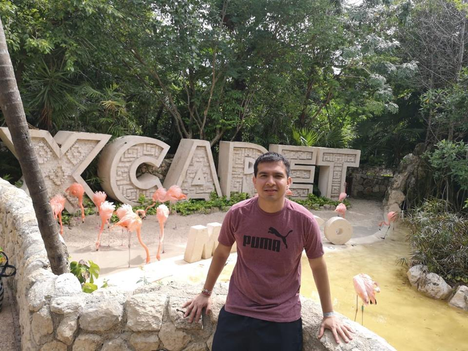

My name is Jorge Castellanos, I was born in Acapulco but currently located in Mexico City. When I was seventeen years I left to go the College
in Puebla City. I got a degree in Electronics by the "Benemerita Universidad Autonoma de Puebla". After ended college, I moved into Mexico City to start my
in my first Job in Telecom Area. I have been working as Network Engineer for more than 11 years in companies
like Telmex, Cisco and currently Fortinet.
In 2010, I got master degree in Information Technology Management by "Universidad del Valle de Mexico. I can speak Spanish, English and also Portuguese.
I enroll in Tec Bootcamp cause I am interested in develop code skills to get job that let me work from any place in the world.
I know it is going to be challange because my current job demands a lot of my time but I commit to achieve it.
I enjoy go to swimming, running and play soccer. I will do my second my second marathon this Sunday. I consider myself introverted, analytic, persistent and constant